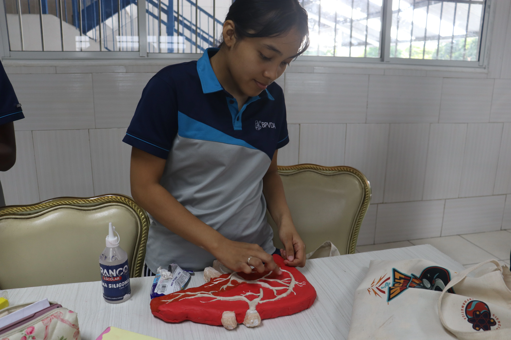

Campus Activo
Aulas Equipadas con Enfoque Tecnológico
Espacios donde la teoría se convierte en experimentación constante con herramientas interactivas y metodología STEM aplicada al aula.
Explorar Secundaria →